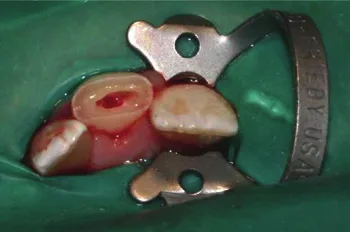

نسخه استخراجشده؛ ترجمه یا تأیید علمی انجام نشده است. وضعیت: captured
دندان دائمی جوان ریشهی ناقص با آپکس باز دارد — و پالپ زنده هنوز دو کار ناتمام دارد:
۱. ادامهی رشد طولی ریشه تا بسته شدن آپکس.
۲.ضخیم شدن دیوارهی عاجی ریشه.
اگر پالپ را زودهنگام برداری، هر دو متوقف میشوند: ریشه کوتاه و دیوارهاش برای همیشه نازک میماند — و دندان تا سالها بعد در معرض شکستگی ریشه قرار میگیرد.
پس هدف اول همیشه یکی است: حفظ حیات پالپ، حتی اگر بخشی از آن برداشته شود.
در شکستگی تاج با اکسپوژر پالپ، بهجای برداشتن کل پالپ تاجی، فقط حدود ۲ میلیمتر از لایهی سطحی برداشته میشود.
گامها: ایزوله با رابردم، برداشت ۲ میلیمتری با فرز الماسی استریل و خنکشونده، کنترل خونریزی با پنبهی مرطوب، گذاشتن MTA یا کلسیم هیدروکساید، و سیل کردن با گلاسآینومر و ترمیم نهایی.
نقطهی تصمیم همان جای همیشگی است: اگر خونریزی کنترل نشود، التهاب عمیقتر رفته و باید بیشتر برداشت.
و یک نکتهی دلگرمکننده: چون آلودگی در روزهای اول سطحی میماند، این روش حتی با چند روز تأخیر هم موفقیت بالایی دارد.

نوع سؤال: ساخت کلمه · 4 خانه
حروف منبع: ح · س · ط · ی